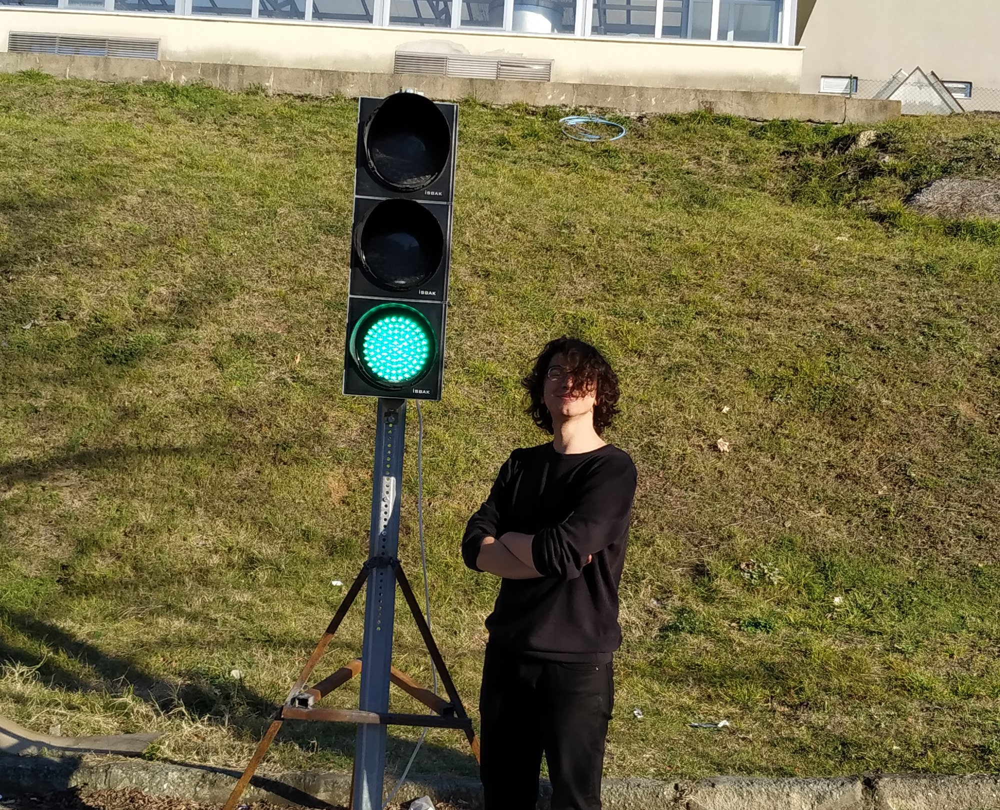
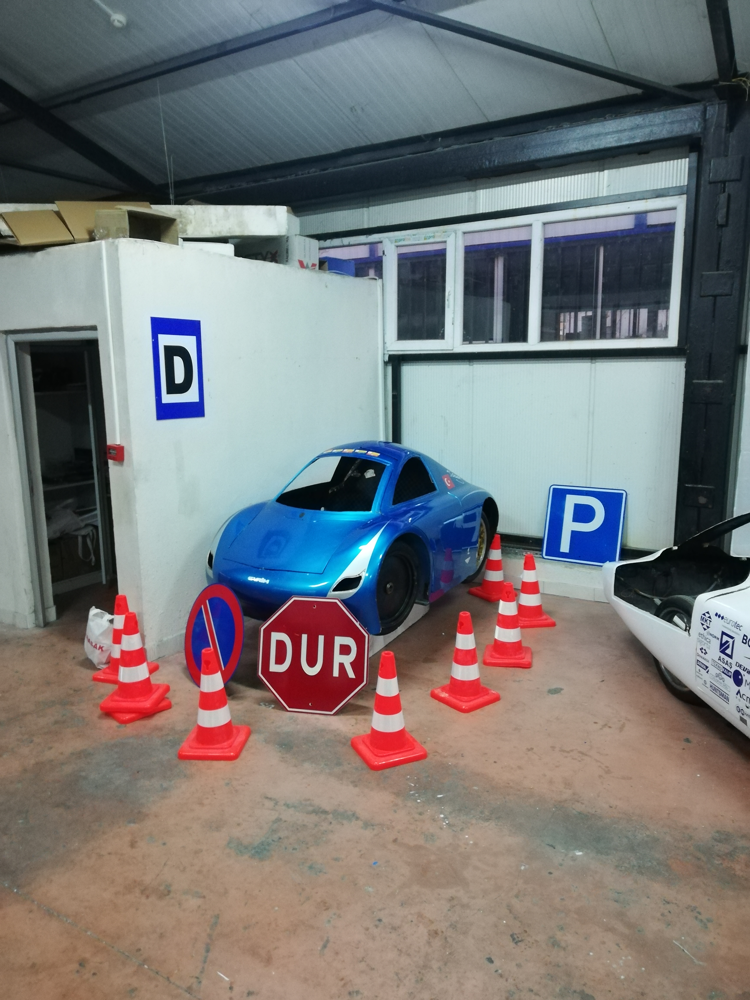
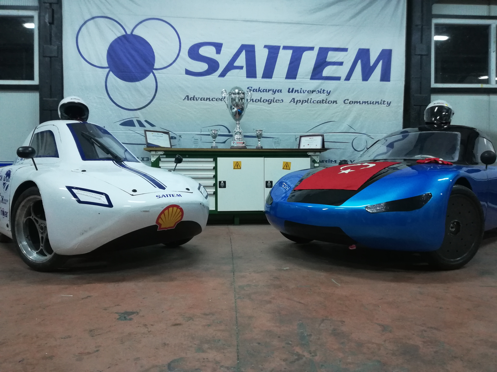

Evimize bilgisayar oldukça erken girdiği için hayatımın her zaman oldukça önemli bir parçası oldu. Başlarda her çocuk gibi bilgisayar benim için yalnızca bir oyuncaktı. O günlerde sadece kırtasiyeden bulabildiğim oyunları oynuyabiliyordum. O günlerdeki oyunların etkisi olsa gerek günümüzde çıkan hiçbir oyuna kendimi ısındıramıyorum ve hala retro oyunlar oynuyorum. Hatta bugünlerde bir raspberry pi aracılığıyla kendime bir emülator konsolu yapmak gibi minik bir hayalim var :) Tabi ki yaşım ilerledikçe bilgisayar yalnızca basit bir oyuncak olmaktan da çıkmış oldu. Ama o kısma sonrasında değineceğim kronolojiyi bozmıyım şimdilik.

Bu arkadaş benim
Her klasik çocuk gibi bazı dönemlerimde futbol, bazı dönemlerimde basketbola ilgim oldu. Hatta bir dönem okulun basketbol takımında da oynadım. Ancak Football Manager'da çürüttüğüm binlerce saatten olsa gerek futbola bu günlerde pek hoş gözle bakamıyorum.
Bu kısımları yazarken, lise yıllarımda herhangi bir hobim olmuş mu diye düşünüyorum. Hayır... Evde olduğu süre boyunca olabildiği kadar oyun oynayan, film ve dizi izleyen, zaman zaman kitap okuyan, tamamen ergenlik yıllarını doya doya yaşamaya çalıştığım. hata yaparak öğrendiğim, mükemmel dostluklar kazandığım; verimliliği tartışmaya açık olsa bile mükemmeliğinin tartışmaya mevzu bahis dahi olmadığı yıllardı benim için. Minik bir detayı unuttum. Kısmet olursa bundan bir kaç yıl sonra ekmeğini yemeğe başlayacağım yazılım dünyasına da lise yıllarında unity ile minik oyunlar yaparken. Son olarak lise arkadaşlarıma yaptığım, amatör ama benim için anlamı büyük bir video bırakıyorum şuraya.
Bir yıl hazırlıkta gülüp eğlendikten sonra üniversitedeki boş zamanımı çok daha verimli harcamam gerektiğini düşündüğüm için, ayrıca merakım da olduğum için, üniversitedeki SAITEM öğrenci topluluğuna üye oldum ve oradaki Robotaksi otonom araç projesinde rol almaya başladım. Ekipteki rolüm yapay zeka algoritmaları aracılığıyla yarış parkurundaki tabelaları tanıtabilmek. Dolayısıyla hayatımın hiç de küçümsenmiyecek bir bölümünü şu sıralarda bu topluluk kapsıyor.

Robotaksi yarışmasındaki aracımız

Bu ikisi de farklı iki yarışmada yarışıyor
Dışardan bakılınca çok sade zevklerim varmış gibi gözüksede hayatımın çoğunu geçici heveslerimle harcadım. Gitar, rubik küp, hikayemi anlatabiliceğim bir oyun yapımı (Bu hayalim hala devam ediyor), bir hikaye yazmak ve bunun gibi yüzlerce minik heves hevesimi aldıktan sonra uçup gidiyor. Ancak bu günlerde hiç de önceki heveslerime benzemeyen ve yaparken oldukça zevk aldığım bir hevesim var. Kendi yapay zeka asistanımı yazmak. Bunu evimde sürekli olarak çalışıcak bir raspberry pi ile kullanmayı düşünüyorum. İlk aşamada sadece evimde spotify dan müziklerimi açıp, bana önemli hatırlatmaları yapıcak asistanımı ileride tamamen mobil olarak taşıyabiliceğim minik bir cihaza dönüştürmek de hedeflerim arasında. Şimdilik sabis gibi sitelerden bildirim geldiğinde sesli bir şekilde okuyan kod üzerinde çalışıyorum.